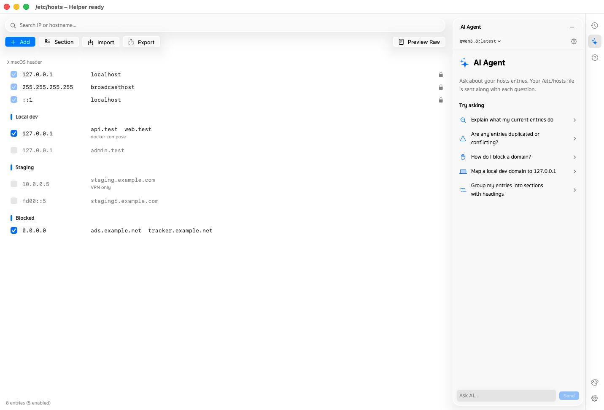
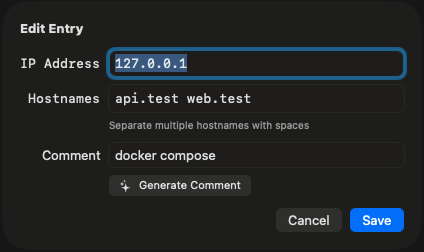
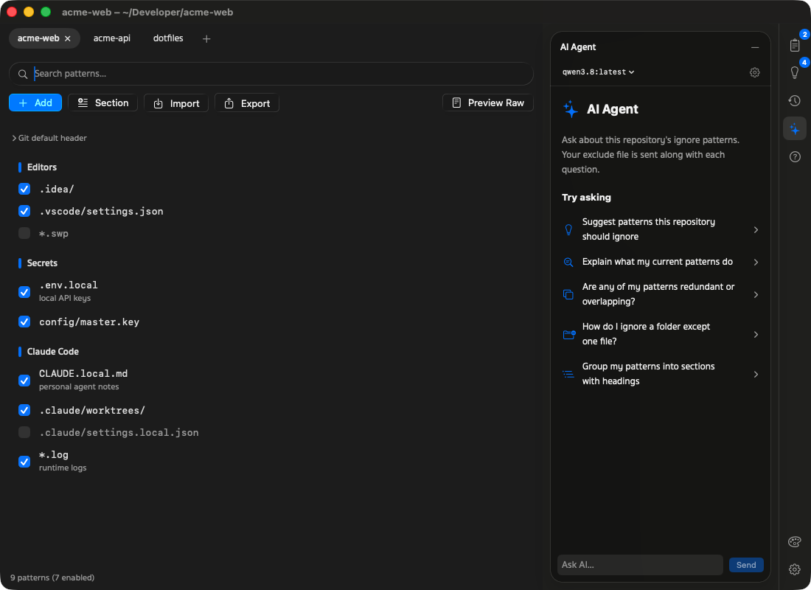

A small tool for a file everyone editsเครื่องมือเล็กๆ สำหรับไฟล์ที่ทุกคนต้องแก้
Every web developer edits /etc/hosts sooner or later. Usually with sudo, a terminal editor and a bit of hope.นักพัฒนาเว็บทุกคนต้องแก้ /etc/hosts สักวัน ส่วนใหญ่ใช้ sudo กับ editor ใน Terminal แล้วก็ลุ้นว่าจะไม่พัง
Why it existsทำไมถึงสร้างแอปนี้
One typo in /etc/hosts can break localhost, and there is no undo. Hosts Manager puts the file in a normal Mac window: check what you type, keep a backup of every save, and let you go back with one click.พิมพ์ผิดตัวเดียวใน /etc/hosts ก็ทำให้ localhost พังได้ และไม่มีปุ่ม undo Hosts Manager จึงเปิดไฟล์นี้ในหน้าต่าง Mac ธรรมดา ตรวจสิ่งที่พิมพ์ สำรองทุกครั้งที่บันทึก และย้อนกลับได้ในคลิกเดียว
It also respects the file you already have. Comments, spacing, tabs and line endings that you didn't touch are written back byte for byte.แอปยังเคารพไฟล์เดิมของคุณ comment ช่องว่าง tab และการขึ้นบรรทัดที่ไม่ได้แก้ จะถูกเขียนกลับเหมือนเดิมทุกไบต์
How it worksทำงานอย่างไร
The app itself never runs as root. A tiny helper, registered with macOS as a LaunchDaemon, is the only part allowed to write /etc/hosts. The app sends it the new content over XPC, and the helper validates it, checks nobody else changed the file, backs up the old one, writes atomically and flushes the DNS cache.ตัวแอปไม่เคยรันด้วยสิทธิ์ root มีเพียง helper ตัวเล็กที่ลงทะเบียนกับ macOS เป็น LaunchDaemon เท่านั้นที่เขียน /etc/hosts ได้ แอปส่งเนื้อหาใหม่ผ่าน XPC แล้ว helper จะตรวจความถูกต้อง เช็กว่าไม่มีใครแก้ไฟล์ไปก่อน สำรองไฟล์เดิม เขียนแบบ atomic และล้าง DNS cache
The helper checks the code signature of whoever connects, down to the exact build it shipped with. Another app on your Mac can't borrow it.helper ตรวจ code signature ของผู้ที่เชื่อมต่อเข้ามา ต้องตรงกับ build ที่มาด้วยกันเท่านั้น แอปอื่นในเครื่องจึงยืมใช้ไม่ได้
Open sourceโอเพนซอร์ส
Hosts Manager is written in Swift and SwiftUI and released under the MIT License. Bug reports, ideas and pull requests are welcome onHosts Manager เขียนด้วย Swift และ SwiftUI เผยแพร่ภายใต้สัญญาอนุญาต MIT แจ้งบั๊ก เสนอไอเดีย หรือส่ง pull request ได้ที่ GitHub.


Sibling appแอปพี่น้อง
Git Exclude Manager
Hosts Manager started as a copy of Git Exclude Manager, which edits .git/info/exclude for every repository on your Mac. Same window, same sections and drag, same AI Agent.Hosts Manager เริ่มจากการต่อยอด Git Exclude Manager ซึ่งแก้ .git/info/exclude ของทุก repository ในเครื่อง หน้าต่างเดียวกัน แบ่งหมวดและลากได้เหมือนกัน มี AI Agent เหมือนกัน

Made by Watthajak Jinasamพัฒนาโดย Watthajak Jinasam
Built so nobody has to type sudo vim /etc/hosts again. The little glass robot shows a globe on its visor and sends every name to the right address.สร้างขึ้นเพื่อให้ไม่มีใครต้องพิมพ์ sudo vim /etc/hosts อีก หุ่นยนต์แก้วตัวเล็กมีรูปลูกโลกบนหน้าจอ คอยส่งทุกชื่อไปยังที่อยู่ที่ถูกต้อง